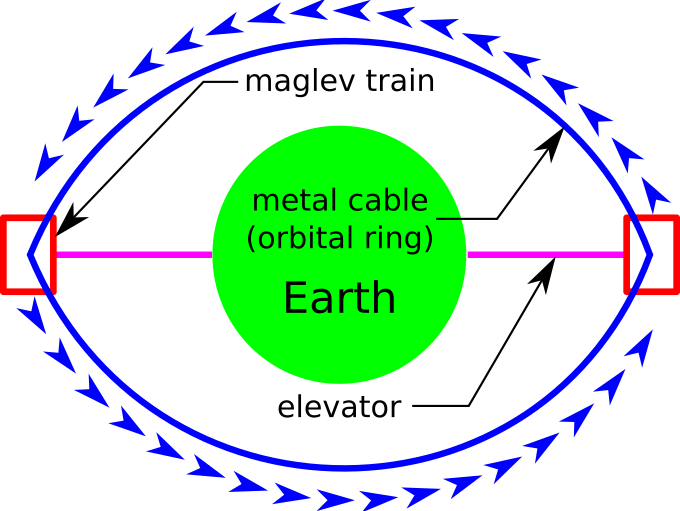
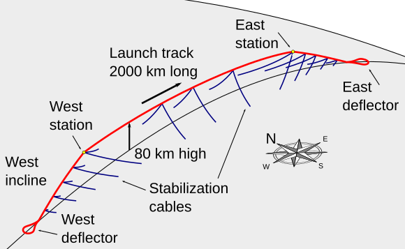

An orbital ring is a concept of an artificial ring placed around a body and set rotating at such a rate that the apparent centrifugal force is large enough to counteract the force of gravity. For the Earth, the required speed is on the order of 10 km/sec, compared to a typical low Earth orbit velocity of 8 km/sec. The structure is intended to be used as a space station or as a planetary vehicle for very high-speed transportation or space launch.

A launch loop, or Lofstrom loop, is a proposed system for launching objects into orbit using a moving cable-like system situated inside a sheath attached to the Earth at two ends and suspended above the atmosphere in the middle. The design concept was published by Keith Lofstrom and describes an active structure maglev cable transport system that would be around 2,000 km (1,240 mi) long and maintained at an altitude of up to 80 km (50 mi). A launch loop would be held up at this altitude by the momentum of a belt that circulates around the structure. This circulation, in effect, transfers the weight of the structure onto a pair of magnetic bearings, one at each end, which support it.